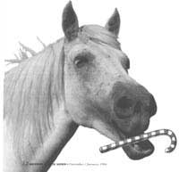
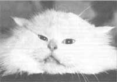
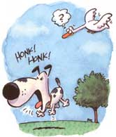

PET HEALTH
Plan on indulging your pet? Stick to affection.
During this joyous time of placing wrapped gifts under perfectly trimmed trees, I've got a favor to ask of all of you. Please think things through before giving someone else an adorable puppy or kitty - or even a goldfish for that matter. Accommodate prospective owners by making sure they are interested in a live gift. (In other words, please don't give a friend a kitten just because you think it's so darn cute.)
Then consider whether or not the someone special who'll be receiving this gift is aware of all the responsibilities of pet ownership. Young kids usually see their gift as a tail-wagging pal, not a dog that aches to be let out at 5 A.M. every morning. Unfortunately, the holiday season is one of the busiest times of the year for humane societies and animal shelters across the country. Too many furry presents don't work out and get returned. If you're absolutely sure your gift will be cared for, supply the new owner with a good behavior manual or gift certificate to a training league or session. Start off the new year right with proper foods and toys and possibly even a complimentary trip to the veterinarian.
Winter, in general, poses special risks to our domestic friends. Give you and your pet a safer, healthier season by following a few simple tips. Keep indoor pets in dry, draft-free areas; older animals should have their beds elevated off the ground or floor. Provide outdoor animals with a dry, insulated pet house or shelter out of the wind. Staying warm also demands plenty of extra calories, so feed your pet accordingly - especially those housed entirely outdoors. Even the best-coated, healthiest animals will have trouble coping with below- or near-zero temperatures for longer than a couple of days. Consider bringing these animals inside, especially when the sun goes down or severe wind chill periods occur.
As for ice, salt, and caked mud, remove them from your pet's paws and coat at regular intervals. If you suspect frostbite, re-warm the affected areas gently by wrapping them in lukewarm (not hot!) water compresses. Frostbitten skin may turn white or gray once rewarmed. In no instances should the frozen skin be rubbed, which could cause irreparable damage to the skin.
Many of us enjoy hibernating under the covers for long winter naps. Cats and kittens are no different, only they opt for warm car engines and radiators instead of beds. So knock on the hood or give a quick honk to your horn and wait a few minutes before starting your car.
Beware of antifreeze - pets love the smell and taste of it, but even a teaspoon is enough to cause irreversible kidney damage. Clean up spills at once and tightly close containers and store them where pets cannot get to them. With a little common sense and precautionary care, you and your pet will have a stress-free holiday season. Happy New Year to both of you.
Dear Andrea:
During the holiday season we often invite relatives and friends over to our house for dessert. One thing that really irks me is when I see my guests sneaking candy to our dog, Iggy. They might think it's a nice treat, but I'm the one up all night caring for Iggy and his upset stomach. Isn't too much sugar dangerous for a dog?
- Amy Mason
Evansville, Indiana
Dear Amy,
Yes. Pets should be kept on their regular diet. Holiday treats - such as chocolate, cookies, pies, and cakes - look and taste great but can be extremely harmful to four-legged friends. I've attempted to explain this to my parents for years now, but they still feed their 60-pound beagle apple pie. (He spits out the apples and swallows the crust.) Chocolate delicacies can be extremely toxic to pets, and many will cause hyperactivity. If you think children get giddy after too much sugar, wait until you see a pup after too many candy canes!
While on the subject of holiday temptations, another source of danger to pets are plants. Christmas rose, holly mistletoe, and philodendron are poisonous to cats and dogs. Keep the plants off of the floor or out of sight. Cats and puppies are particularly prone to getting into ivy.
Deter your pet from drinking the Christmas tree water by keeping a fresh supply available at all times. Don't let guests put ribbons and other wrappings around a pet's neck. While your pet may look precious, it's not worth the risk of having him or her choke on them.
Dear Andrea,
I have a five-year-old Himalayan who is overweight and refuses to groom herself. She frequently becomes matted and will not allow me to comb her out. What should I do?
-Henry Jenkins
Portland, Maine
Dear Henry,
Normal grooming is the sign of a healthy cat. Poor grooming can result from illness, stress, obesity, or use of various skin or hair products with which the animal disagrees. Excessive grooming may result from emotionally stressful conditions - particularly in Siamese or Abyssinians - from chronic boredom or from attention - seeking behavior. A normal cat grooms itself anywhere from 15 to 30 times throughout the day by licking with its tongue, which is equipped with coarse barbules (especially towards the back). These barbules hide the taste buds and are used to groom the coat and to soften food.
Obesity - common among North American cats - is a direct result of their increase in popularity as household pets; consequently, conditions of their life-styles have changed. To put it bluntly, today's cats are frequently spoiled. As indoor cats lead lazier lives and their commercialized food becomes more and more palatable, is it any surprise that the number of obese cats keeps climbing?
Obesity may predispose these animals to increased incidence of coronary disease, hepatic (liver) disease, osteoarthritis, and endocrine abnormalities over the long term. The short-term effects are more obvious: unkempt coat, dull attitude, poor muscle and bone development.
WEIGHING IN :
While many cat owners think their chubby pet is cute, overfeeding may predispose it to disease.
The fact is obese cats don't groom themselves very well. This may be due to the fact that they experience more respiratory difficulties (because a large body of fat is usually deposited behind the di aphragm) and can't exert themselves as easily to groom. Or it may be due to the fact that they cannot turn around and distort their bodies into the helical forms that their sleek counterparts can. Either way it becomes a vicious cycle; the less they groom, the worse their coat looks (and tastes for that matter), the less they want to groom themselves, and the more matted they become.
Once a cat becomes matted, it's impossible and often injurious to the animal to comb or cut the mats out. The ungroomed hair of cats tangles and mats extremely close to the skin, often entrapping debris and dead skin in the process. The mats tighten and stretch the normally mobile skin and cause a great deal of discomfort to the animal. Therefore pulling on them with a comb usually pulls the skin directly. This is not only painful for the animal, but it can harm the skin.
Some owners have attempted to cut the mats out, only to find that they've inevitably and unknowingly lacerated the skin intertwined in the mat. The only reasonable solution to mat removal is to have your vet or groomer clip them using professional clippers (often under sedation) and treat the skin underneath accordingly.
After the mats are removed, cats with long hair should be combed on a regular basis regardless of their weight, and even if they do groom themselves. An obese cat is more likely to form hair mats and should be placed on an appropriate diet to decrease its weight and decrease the probability that its coat is likely to form hair mats. Your vet can suggest several diet regimens that will assure that caloric intake is appropriate. Never simply starve an obese cat - this may result in several metabolic disturbances, some of which can be life threatening.
Dear Andrea:
We recently obtained a pony and we're curious about why his teeth need care and how often dental work should be done?
- Dave Arbor
Louisville, Kentucky
Dear Dave,
Horses and ponies chew and grind their teeth in such a way (side to side) that wears down the edges of their molars, making them extremely sharp. The edges, or "points," are worse on the cheek or outer edges of the top molars and on the inner or tongue edges of the lower molars.
The points often cut the cheek or tongue, cause sloppy eating, and even worse, may lead to weight loss or indigestion. Ponies with bad points on their teeth take a mouthful of grass or grain, chew with very exaggerated motion, and drop half-chewed food out of their mouth. Some horses and ponies with this problem will avoid the bit or constantly "play with the bit" if bridled. These sharp teeth may cause oral ulceration.
FLOATING TEETH:
If your pony chews in exaggerated motions or drops half-chewed food, consider having a vet file its teeth.
The points can be filed down with an instrument known as a "float, " a special file that is on the end of a long handle. Ponies need to be sedated and properly restrained in order to float their teeth. Many veterinarians will use a device known as a mouth speculum to keep the horse's mouth open, and then they will visualize or actually feel the teeth as they file the points. Other veterinarians hold the horse's tongue off to one side of the mouth (toward the halter) to open the mouth while the teeth are being filed. The filing or floating makes a severe grating sound as the points are abraded. Extra care must be taken to avoid abrading the gums, tongue, or gingiva as you float the teeth.
The frequency of having this procedure done is determined by the severity (if any) of the horse's malocclusion (how well the upper and lower jaws and teeth meet) as well as the horse's chewing movements. Most ponies and horses need to have their teeth examined at least two to three times a year. Some horses with severe points may need to have dietary changes prescribed by their veterinarian in order to help reduce oral trauma that occurs from the motions of chewing.
Dear Andrea:
Our small dog has bad coughing spells, and sometimes we massage his throat to work him out of it. Is a weak muscle causing the problem?
- H.M. Heath
Aztec, NM
Dear H. M.,
Many toy and miniature breeds of dogs suffer from a congenital disease known as collapsing trachea. Although the animals may be born with this disease, many show no signs of the disease until they are three to five years of age. Most of the dogs affected have dome-shaped heads and short necks. Historically most owners fail to notice any respiratory problems until the animals become excited, exercise, bark, or pull on the leash. Some incidents may be so severe that they cause the animals to arrest or faint.
The cough is a very deep "honking" due to the trachea or windpipe being malformed in such a way that its cartilage rings are somewhat flattened. Over the top of these cartilage rings lies a smooth muscle membrane, which tends to be somewhat loose instead of its stretched snug like normal. This smooth, hanging membrane often interferes with the flow of air that moves down the trachea. In excited animals, the membrane may hang into the windpipe and become quite cumbersome, forcing the dog to cough.
While massaging the throat may help relax some dogs, it may also stimulate some sensory nerves, resulting in a slowing of the heart rate. This could be dangerous in dogs that already have respiratory problems, and may even cause cardiac arrest in certain pug-nosed breeds which have collapsing tracheas.
Your vet can run some tests, such as an electrocardiogram, and take (x-rays) to diagnose a collapsing trachea. Fluoroscopy, a type of imaging that uses radiographs taken over a period of time, is most helpful in detecting the problem. Unfortunately fluoroscopy is often found only at referral institutions, so ask your veterinarian about this procedure. Surgical therapy (placing a prosthesis in the trachea) is often reserved for chronic cases which are not responsive to any of the suggestions above.
Editor's Note: Do you have questions regarding your pet's health? Why not send those questions to Dr. Andrea Looney for some free professional advice? You can write her c/o: Pet Vet, Mother Earth News, P.O. Box 129, Arden, NC 28704.
|
 Sneaking a little extra sugar to your pet may not be as kindhearted as you think. |
 Tell-tale signs of obesity include a dull personality, an unkempt coat, and poor muscle or bone development food. |
 |